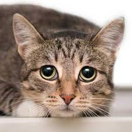
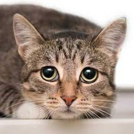

Африканский слон
Самое крупное сухопутное млекопитающее. Слоны известны своим интеллектом, сложной социальной структурой и уникальным хоботом, который используется как для дыхания, так и для захвата предметов.
Подробнее»
 



Самое крупное сухопутное млекопитающее. Слоны известны своим интеллектом, сложной социальной структурой и уникальным хоботом, который используется как для дыхания, так и для захвата предметов.
Подробнее»
Лорем ипсум баабабабабамемыы Львы — единственные кошки, живущие в социальных группах, называемых прайдами. Их грозный рык можно услышать на расстоянии до 8 километров, что служит для общения с сородичами и отпугивания соперников.
Подробнее»
Шимпанзе — одни из самых умных приматов. Они разделяют около 98% ДНК с человеком. Эти животные способны использовать инструменты, например, палки для добычи термитов или камни для раскалывания орехов.
Шимпанзе — одни из самых умных приматов. Они разделяют около 98% ДНК с человеком. Эти животные способны использовать инструменты, например, палки для добычи термитов или камни для раскалывания орехов.

Наш каталог создан для того, чтобы познакомить вас с удивительным разнообразием животного мира нашей планеты. Мы верим, что знание — это первый шаг к сохранению природы. Узнайте больше о редких и исчезающих видах.
Подробнее»Крупнейший подвид тигра, приспособленный к жизни в суровых условиях дальневосточной тайги. Уникальный полосатый узор на шкуре тигра так же индивидуален, как отпечатки пальцев у человека.
Подробнее»
Волки — высокосоциальные хищники, живущие в стаях со строгой иерархией. Они являются предками всех пород домашних собак и играют ключевую роль в поддержании баланса в экосистемах.
Подробнее»